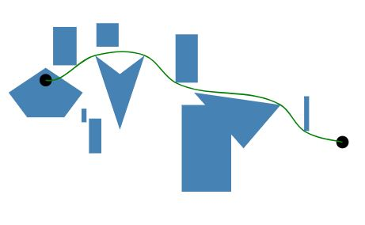

A brief introduction to edge-routing.
Background
Edge placement is one of the most important issue in graph drawing. Most graphs have nodes with associated textual or graphical content. In most of cases, the structure of the graph is complicated. If an edge which does not connect to a node are drawn over the node, the textual or graphical content of that node gets obscured.
Introduction
Edge routing is a js library that provides a solution to the problem. Using the library, clients specify shapes of nodes and endpoints of edges, then the library will provide a Bézier curve with no uncessary crossings.

Quick start
First, define your edges and obstacles. Obstacles are closed region that edges do not want to go through:
var pathes = [
[
[60, 50],
[300, 100]
],
[
[20, 60],
[300, 80],
],
];
var obstacles = [
[
[170, 70],
[170, 140],
[210, 140],
[210, 70]
],
[
[100, 30],
[120, 45],
[140, 30],
[120, 90],
],
]
That means you have 2 edges and 2 obstacles. One of the edges starts at (60, 50) and ends at (300, 100), and one of the obstacles is a 40×70 rectangle.
Then, create a layout and add those obstacles to the layout.
var layout = Pathplan.createLayout();
for(let i = 0; i < obstacles.length; i++){
layout.addPolygonObstacle(obstacles[i], i.toString());
}
Next, add edges to the layout. Before doing that, add endpoints of edges to the layout first.
var endpointId = 0;
for (let i = 0; i < pathes.length; i++){
let path = pathes[i];
layout.addPathEndpoint([path[0][0], path[0][1]], endPointId.toString());
endPointId += 1;
layout.addPathEndpoint([path[1][0], path[1][1]], endPointId.toString());
endPointId += 1;
layout.addPath((endPointId - 2).toString(), (endPointId - 1).toString(), i.toString());
};
Finally, build the layout and get results.
layout.build();
for(let i = 0; i < pathes.length; i++){
let curves = layout.curvePath(i.toString());
}